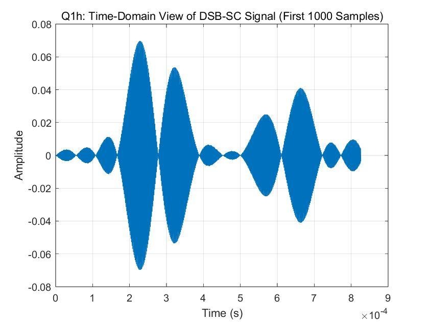
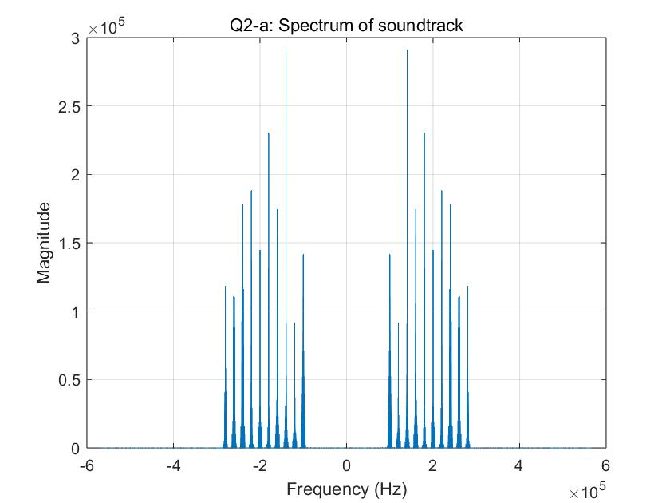
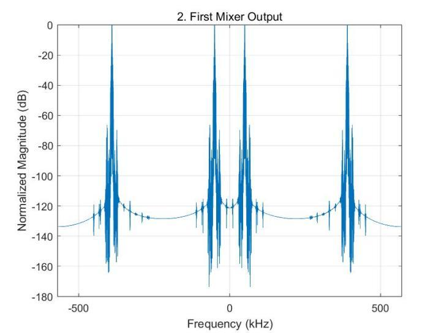
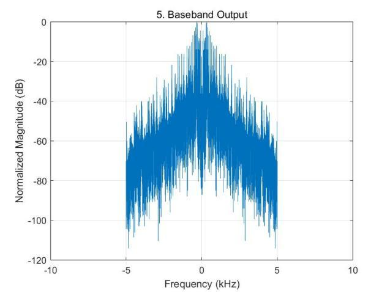
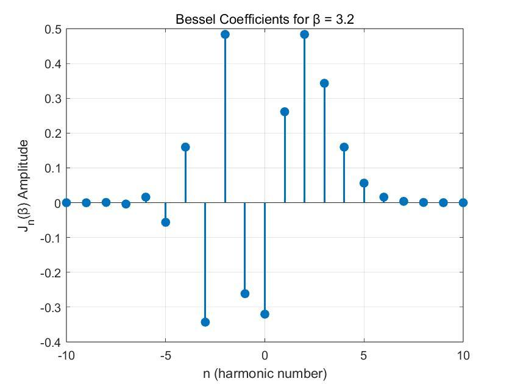

Challenge
Send audio over a radio carrier and get it back intact, then pick a single station out of a crowded band.
Signal processing · Individual coursework · 2025
Modulating, transmitting and recovering audio in simulation: from a single DSB-SC link to a superheterodyne receiver that tunes one station out of ten.

Send audio over a radio carrier and get it back intact, then pick a single station out of a crowded band.
Wrote the full chain in MATLAB: resampling, modulation, coherent demodulation and FIR filtering, then a two-stage superheterodyne receiver and an FM analysis.
The recovered audio matched the original, and the receiver identified the correct track (004) out of ten by cross-correlation.

Finding: after filtering and downsampling, the recovered audio matched the original spectrum and played back cleanly.

Finding: track 004 scored 0.9997; all nine other tracks scored below 0.1.


For a 500 kHz carrier, 10 kHz tone and β = 3.2, I derived the theoretical spectrum from Bessel functions, then simulated FM generation, differentiation with envelope detection, a hard limiter and band-pass reconstruction.

Derivations, code walkthroughs and every plot for Q1–Q3 (78 pages).
The Q1 audio is MATLAB’s built-in handel sample. The Q2 test signals were provided by the module and are not included in the download.